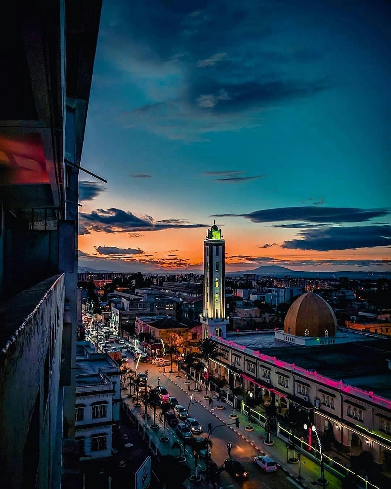

Alger est la capitale de l'Algérie, située sur la côte méditerranéenne du pays, elle possède un climat méditerranéen agréable, avec des étés chauds et secs et des hivers doux et pluvieux. Alger est un centre culturel important,elle abrite de nombreux musées, galeries d'art, théâtres. On y trouve le centre historique connu sous le nom de la Casbah, qui est classé au patrimoine mondial de l'UNESCO. La ville est également très dynamique, elle accueille des festivals tout au long de l'année.
Béjaïa, également connue sous le nom de Bougie, est une ville portuaire située sur la côte méditerranéenne de l'Algérie. Elle est la préfecture de la wilaya de Béjaïa et l'une des principales villes de la région de Kabylie. Elle a été fondée au IVe siècle avant J.-C. par les Carthaginois, puis a été successivement occupée par les Romains, les Vandales, les Byzantins et les Arabes. Cette riche histoire se reflète dans les nombreux sites historiques et monuments de la ville. La ville est également réputée pour ses plages magnifiques. Les plages de Tichy, Cap Sigli et Aït-Yenni offrent des eaux cristallines et des paysages magnifiques, ce qui en fait des destinations populaires pour les habitants et les touristes.
.jpeg)
La ville de Tipaza est entourée par la mer d'un côté et par les montagnes de l'autre, offrant ainsi un cadre spectaculaire. Le site archéologique de Tipaza est l'une des principales attractions de la ville. Il abrite les vestiges de l'ancienne ville romaine de Tipasa, qui remonte à l'époque romaine. On y trouve des ruines bien préservées, notamment un théâtre romain, des thermes, des villas et des nécropoles. Ce site est classé au patrimoine mondial de l'UNESCO et constitue un témoignage fascinant de l'histoire ancienne de la région.
Blida est connue pour son climat agréable et tempéré tout au long de l'année. Grâce à sa position géographique, la ville bénéficie de précipitations abondantes, ce qui la rend fertile et verdoyante. C'est d'ailleurs pour cette raison qu'elle est surnommée la "Ville des Roses". La ville de Blida possède un riche patrimoine historique et culturel. Elle abrite plusieurs sites d'intérêt, tels que la Grande Mosquée, qui remonte au XVIIIe siècle, ainsi que l'ancien palais des rois de la dynastie turque de Kouloughli. Le parc Chréa, situé à proximité, est un endroit prisé des habitants pour se détendre et profiter de la nature.
